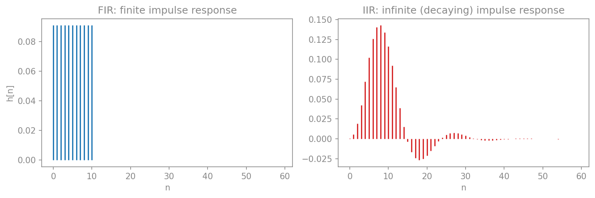
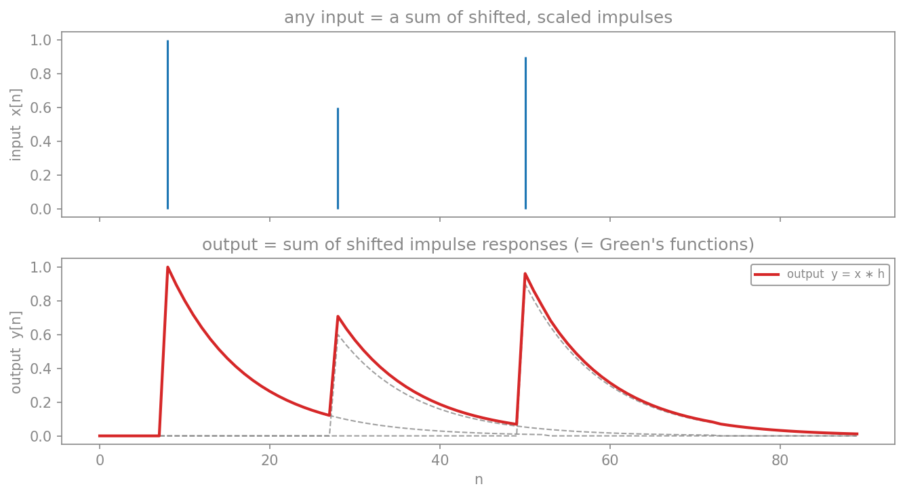
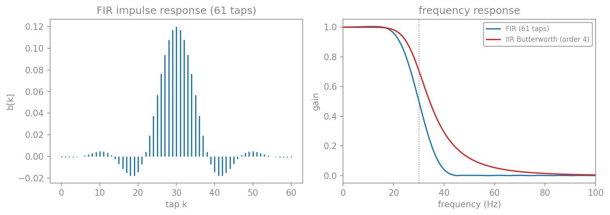
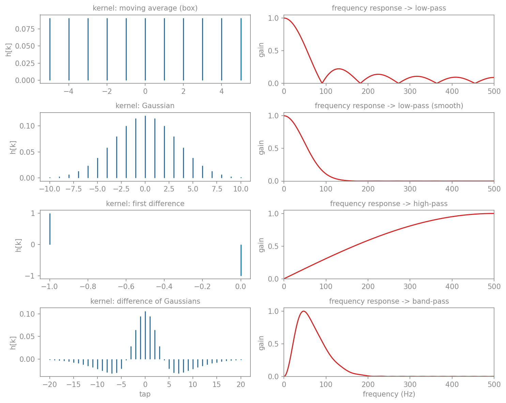
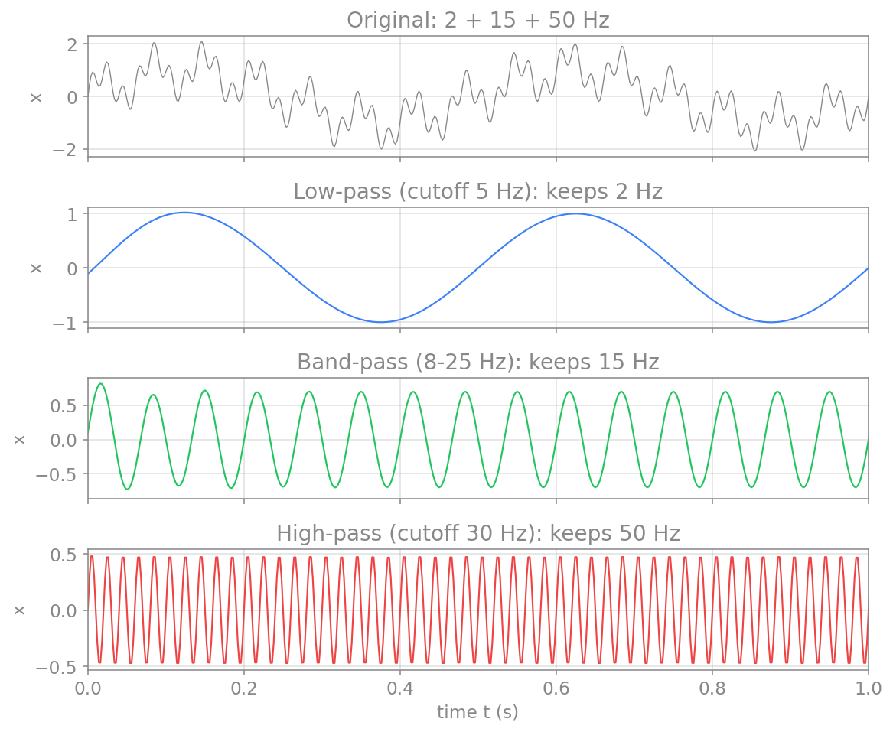
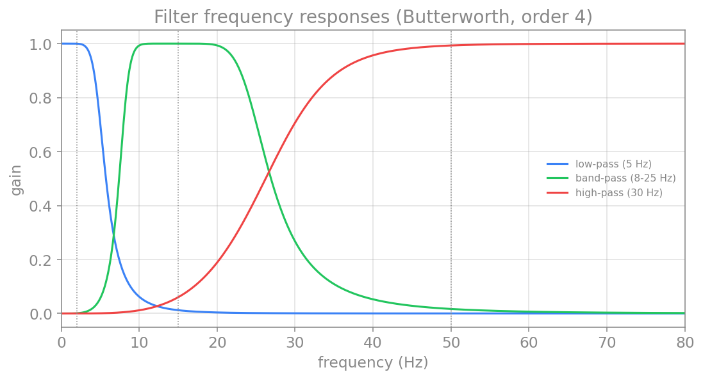
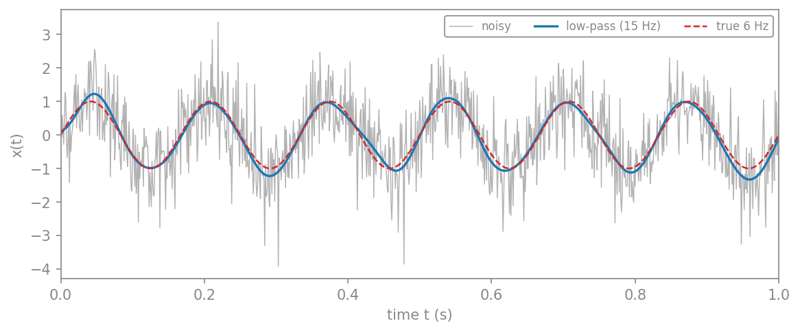
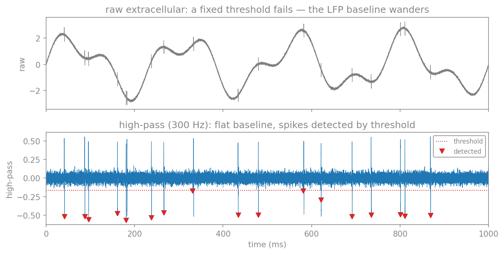
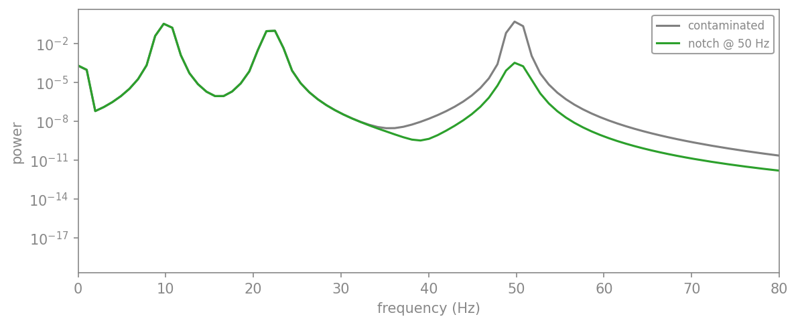

صافیها
در فصلِ حوزهٔ زمان دیدیم که کانولوشن میتواند سیگنال را هموار کند. این، نمونهای ساده از یک صافی (filter) بود. بهطورِ کلی، صافی ابزاری است که برخی بسامدها را از سیگنال عبور میدهد و برخی دیگر را تضعیف یا حذف میکند. صافیها در علوم اعصاب نقشِ مرکزی دارند: برای حذفِ نوفهٔ خطِ برق (۵۰ یا ۶۰ هرتز)، برای جداکردنِ باندهای مغزی (آلفا، بتا، گاما)، و برای حذفِ روندِ آهستهٔ پسزمینه از ثبتها.
انواع صافی
بر پایهٔ اینکه کدام بسامدها را عبور میدهند، صافیها را به چند دسته تقسیم میکنیم:
- صافیِ پایینگذر (low-pass): بسامدهای پایینتر از یک بسامدِ مرزی (cutoff) را عبور میدهد و بسامدهای بالا را تضعیف میکند. برای هموارسازی و حذفِ نوفهٔ پربسامد به کار میرود.
- صافیِ بالاگذر (high-pass): برعکس، بسامدهای بالا را عبور میدهد و بسامدهای پایین (مثلاً روندِ آهسته) را حذف میکند.
- صافیِ میانگذر (band-pass): تنها بسامدهای میانِ دو مرز را عبور میدهد. برای جداکردنِ یک باندِ بسامدیِ خاص (مثلاً باندِ آلفا) آرمانی است.
- صافیِ میاننگذر (band-stop یا notch): برعکسِ میانگذر، تنها یک باندِ باریک را حذف میکند. کاربردِ کلاسیکِ آن، حذفِ نوفهٔ ۵۰ هرتزیِ خطِ برق است.
پاسخ بسامدی
رفتارِ یک صافی را با پاسخِ بسامدیِ آن توصیف میکنیم: نموداری که نشان میدهد صافی به هر بسامد چه بهرهای (gain) میدهد. بهرهٔ نزدیک به ۱ یعنی آن بسامد تقریباً دستنخورده عبور میکند، و بهرهٔ نزدیک به ۰ یعنی آن بسامد حذف میشود. ناحیهای که صافی عبور میدهد باندِ عبور (passband) و ناحیهای که حذف میکند باندِ توقف (stopband) نام دارد.
در عمل، گذار از باندِ عبور به باندِ توقف هرگز کاملاً تند نیست؛ همیشه یک ناحیهٔ گذارِ تدریجی وجود دارد. مرتبهٔ صافی تعیین میکند که این گذار چقدر تند است: مرتبهٔ بالاتر، گذارِ تندتر، اما به بهای پیچیدگیِ بیشتر و احتمالِ ناپایداری.
صافیهای FIR و IIR
پیش از آنکه به ساختِ صافیها بپردازیم، باید بدانیم هر صافیِ خطی به یکی از دو خانوادهٔ بنیادی تعلق دارد. کلیدِ تمایز، پاسخِ ضربهای (impulse response) است: خروجیِ صافی وقتی ورودی یک ضربهٔ تنها \((1, 0, 0, \dots)\) باشد. پاسخِ ضربهای، اثرِ انگشتِ صافی است؛ هر صافیِ خطی با کانوالوکردنِ ورودی با پاسخِ ضربهایِ خود کار میکند.
پاسخِ ضربهای چیست و چرا همهچیز را تعیین میکند؟
ضربه (impulse) سادهترین سیگنالِ ممکن است: تنها در لحظهٔ صفر مقدارِ ۱ دارد و در بقیهٔ جاها صفر است، یعنی \(\delta[n] = (1, 0, 0, 0, \dots)\). در زمانِ گسسته به آن واحدِ ضربه یا دلتای کرونکر (Kronecker delta) میگویند؛ همتای پیوستهاش دلتای دیراک (Dirac delta) \(\delta(t)\) است—که بهجای یک دنباله، یک تابعِ تعمیمیافته با پهنای صفر و سطحِ زیرِ منحنیِ واحد است. پاسخِ ضربهای \(h[n]\)، خروجیِ صافی در پاسخ به همین ورودیِ ضربه است.
چرا این یک سیگنالِ کوچک، کلِ رفتارِ صافی را تعیین میکند؟ نکته اینجاست که هر سیگنال را میتوان بهصورتِ مجموعی از ضربههای جابهجاشده و مقیاسخورده نوشت:
حال اگر صافی خطی و ناوردا به انتقال (LTI) باشد، دو خاصیت داریم: پاسخ به مجموع، مجموعِ پاسخهاست (خطیبودن)، و پاسخ به ضربهٔ جابهجاشده، همان پاسخِ ضربهایِ جابهجاشده است (ناوردایی به انتقال). با ترکیبِ این دو، خروجی برای هر ورودی چنین میشود:
یعنی دانستنِ \(h\) بهتنهایی، خروجی را برای هر ورودیِ ممکن میدهد—و آن عمل، دقیقاً همان کانولوشن است. به همین دلیل \(h\) را «اثرِ انگشتِ» صافی مینامیم: همان هستهٔ کانولوشن است، و تبدیلِ فوریهاش همان پاسخِ بسامدیِ صافی.
تفاوتِ FIR و IIR هم در همینجا ریشه دارد: در صافیِ FIR پاسخِ ضربهای پس از چند نمونه دقیقاً صفر میشود (متناهی)، اما در صافیِ IIR بهخاطرِ بازخورد، تا بینهایت ادامه مییابد و تنها بهتدریج میرا میشود (نامتناهی):
import numpy as np
from scipy import signal as sig
impulse = np.zeros(60); impulse[0] = 1.0 # the impulse (1, 0, 0, ...)
h_fir = sig.lfilter(np.ones(11)/11, [1], impulse) # FIR: finite
b, a = sig.butter(4, 0.12)
h_iir = sig.lfilter(b, a, impulse) # IIR: infinite (decaying)

پاسخِ ضربهای و تابعِ گرین (Green's function)
اگر فیزیک خوانده باشید، این مفهوم برایتان آشناست؛ تنها نامش فرق میکند. آنچه در پردازشِ سیگنال پاسخِ ضربهای مینامیم، در فیزیک و ریاضیاتِ کاربردی تابعِ گرین (Green's function) نام دارد—و این دو، عیناً یک چیزند.
تابعِ گرینِ یک عملگرِ دیفرانسیلیِ خطیِ \(L\)، پاسخِ آن عملگر به یک چشمهٔ دلتای دیراک است:
آنگاه پاسخ به هر ورودیِ دلخواهِ \(f\) از انتگرالگیری بهدست میآید:
حال اگر سامانه ناوردا به انتقال (LTI) باشد، \(G\) تنها به اختلافِ \(t - t'\) بستگی دارد، یعنی \(G(t, t') = h(t - t')\)، و آن انتگرال دقیقاً به کانولوشن فرومیکاهد:
این همان معادلهٔ \(y = x * h\) است که بالاتر دیدیم. پس تابعِ گرینِ معادلهٔ حاکم بر سامانه، همان پاسخِ ضربهای آن است—تنها نامگذاری فرق میکند: «پاسخِ ضربهای» در پردازشِ سیگنال، و «تابعِ گرین» در فیزیک و حلِّ معادلاتِ دیفرانسیل.
چرا این دو یکیاند؟ به همان دلیلی که پاسخِ ضربهای کلِ صافی را تعیین میکرد: هر ورودی را میتوان مجموعی از ضربههای جابهجاشده و مقیاسخورده نوشت، و چون سامانه خطی و ناوردا به انتقال است، خروجی نیز مجموعی از همان پاسخهای ضربهای (تابعهای گرینِ) جابهجاشده و مقیاسخورده میشود. این، دقیقاً تعریفِ کانولوشن است:

دو نکتهٔ تکمیلی: علّیت (causality) به تابعِ گرینِ پسین (retarded، یعنی \(G = 0\) برای \(t < t'\)) متناظر است، که همان پاسخِ ضربهایِ علّی است (\(h[n] = 0\) برای \(n < 0\)). و در حوزهٔ بسامد، تابعِ تبدیلِ صافی (تبدیلِ فوریهٔ \(h\)) برابرِ وارونِ عملگر است: \(\hat{G}(\omega) = 1/L(\omega)\). پس پاسخِ ضربهای، تابعِ گرین، و هستهٔ کانولوشن، سه نامِ یک ایدهاند.
صافیِ FIR (پاسخِ ضربهایِ متناهی، Finite Impulse Response): پاسخِ ضربهای طولِ متناهی دارد. خروجی تنها ترکیبی خطی از مقادیرِ گذشته و حالِ ورودی است:
این دقیقاً همان کانولوشنی است که در فصلِ حوزهٔ زمان دیدیم: ضرایبِ \(b_k\) همان هستهٔ کانولوشن (پاسخِ ضربهای) هستند. میانگینِ متحرکی که در آن فصل ساختیم، سادهترین صافیِ FIR است (هستهای جعبهای).
صافیِ IIR (پاسخِ ضربهایِ نامتناهی، Infinite Impulse Response): پاسخِ ضربهای طولِ نامتناهی دارد و با یک معادلهٔ تفاضلی توصیف میشود که علاوه بر ورودی، به مقادیرِ گذشتهٔ خروجی نیز وابسته است (جملهٔ بازخورد):
همین بازخورد است که IIR را نیرومند (با ضرایبِ کم، گذارِ تند) اما در عوض پیچیدهتر و مستعدِ ناپایداری میکند. وقتی در ادامه scipy.signal.butter را فرامیخوانیم، همین دو دستهٔ ضرایب—\(b\) (پیشخور) و \(a\) (بازخورد)—را برمیگرداند، و filtfilt آنها را با همین معادلهٔ تفاضلی اعمال میکند.
برای دیدنِ تفاوت، یک صافیِ پایینگذرِ FIR (با تابعِ firwin) و یک صافیِ پایینگذرِ IIR باترورث را با مرزِ یکسانِ ۳۰ هرتز میسازیم و مقایسه میکنیم:
import numpy as np
import matplotlib.pyplot as plt
from scipy import signal as sig
fs = 500.0
fc = 30.0
b_fir = sig.firwin(61, fc, fs=fs) # FIR: 61 taps = the impulse response
b_iir, a_iir = sig.butter(4, fc, fs=fs) # IIR: Butterworth, order 4
w1, h1 = sig.freqz(b_fir, [1], fs=fs, worN=2000)
w2, h2 = sig.freqz(b_iir, a_iir, fs=fs, worN=2000)
fig, (ax1, ax2) = plt.subplots(1, 2, figsize=(10, 3.6))
ax1.stem(np.arange(len(b_fir)), b_fir, linefmt="tab:blue", markerfmt=" ", basefmt=" ")
ax1.set_title("FIR impulse response (61 taps)")
ax1.set_xlabel("tap k"); ax1.set_ylabel("b[k]")
ax2.plot(w1, np.abs(h1), color="tab:blue", label="FIR (61 taps)")
ax2.plot(w2, np.abs(h2), color="tab:red", label="IIR Butterworth (order 4)")
ax2.axvline(fc, color="gray", ls=":", lw=1)
ax2.set_xlim(0, 100); ax2.set_xlabel("frequency (Hz)"); ax2.set_ylabel("gain")
ax2.set_title("frequency response"); ax2.legend()
plt.tight_layout()
plt.show()

کدام را برگزینیم؟
صافیِ FIR همیشه پایدار است و میتواند فازِ خطی داشته باشد (تأخیرِ یکسان برای همهٔ بسامدها)، اما برای گذارِ تند به ضرایبِ بسیار زیاد نیاز دارد. صافیِ IIR با ضرایبِ بسیار کمتر به گذارِ تند میرسد، اما فازش خطی نیست و میتواند ناپایدار شود. در علوم اعصاب، وقتی زمانبندیِ دقیق مهم است، فازِ خطیِ FIR ارزشمند است؛ وقتی کارایی مهم است، IIR (مانندِ باترورث) رایجتر است.
کانولوشن و صافی: دو روی یک سکه
در فصلِ حوزهٔ زمان، کانولوشن و میانگینِ متحرک را ساختیم؛ در این فصل از صافیهای پایینگذر، بالاگذر و میانگذر سخن میگوییم. آیا اینها دو چیزِ متفاوتاند؟ پاسخ، که در بخشِ پیش هم به آن اشاره شد، این است: نه—اینها دو نگاه به یک عملِ واحدند.
شباهت. هر صافیِ خطی، در دلِ خود یک کانولوشن با پاسخِ ضربهای (هسته) است، و برعکس، هر کانولوشن با یک هستهٔ ثابت، یک صافیِ خطی است. پس «میانگینِ متحرک» و «صافیِ پایینگذر» میتوانند یک چیز باشند.
تفاوت—در واژگان، نه در ماهیت. آنچه فرق میکند، زاویهٔ نگاه است:
- وقتی صافی را با هستهاش نام میبریم—«صافیِ میانگینِ متحرک»، «صافیِ گاوسی»—داریم آن را از منظرِ حوزهٔ زمان توصیف میکنیم: با چه چیزی کانوالو میکنیم.
- وقتی آن را «پایینگذر»، «بالاگذر» یا «میانگذر» مینامیم، داریم آن را از منظرِ حوزهٔ بسامد توصیف میکنیم: کدام بسامدها را عبور میدهد.
پلِ میانِ این دو نگاه، قضیهٔ کانولوشن است: تبدیلِ فوریهٔ هسته، همان پاسخِ بسامدیِ صافی است. پس شکلِ هسته در حوزهٔ زمان، نوعِ صافی را در حوزهٔ بسامد تعیین میکند. بیایید چند هسته را کنارِ پاسخِ بسامدیِ آنها ببینیم:
import numpy as np
import matplotlib.pyplot as plt
fs = 1000.0
def freq_response(kernel, nfft=4096):
H = np.fft.rfft(kernel, nfft)
f = np.fft.rfftfreq(nfft, 1/fs)
mag = np.abs(H)
return f, mag/mag.max()
box = np.ones(11)/11 # moving average
xg = np.linspace(-3, 3, 21); g = np.exp(-xg**2/2); gauss = g/g.sum() # Gaussian
diff = np.array([1.0, -1.0]) # first difference
xx = np.linspace(-4, 4, 41)
gn = np.exp(-xx**2/(2*0.5**2)); gn /= gn.sum()
gw = np.exp(-xx**2/(2*1.5**2)); gw /= gw.sum()
dog = gn - gw # difference of Gaussians
rows = [("moving average (box)", "low-pass", box),
("Gaussian", "low-pass (smooth)", gauss),
("first difference", "high-pass", diff),
("difference of Gaussians", "band-pass", dog)]
fig, axes = plt.subplots(4, 2, figsize=(10, 8))
for r, (name, ftype, k) in enumerate(rows):
axes[r, 0].stem(np.arange(len(k))-len(k)//2, k, linefmt="tab:blue",
markerfmt=" ", basefmt=" ")
axes[r, 0].set_title(f"kernel: {name}", fontsize=10); axes[r, 0].set_ylabel("h[k]")
f, H = freq_response(k)
axes[r, 1].plot(f, H, color="tab:red"); axes[r, 1].set_xlim(0, fs/2)
axes[r, 1].set_title(f"frequency response -> {ftype}", fontsize=10)
axes[r, 1].set_ylabel("gain")
plt.tight_layout()
plt.show()

این تصویر همهٔ مفاهیم را به هم گره میزند: هستهٔ جعبهای که در فصلِ پیش برای هموارسازی به کار بردیم، یک صافیِ پایینگذر بوده است—و موجهای جانبیِ آن (همان سینوسیشکلِ ناشی از لبههای تیزِ جعبه) دلیلِ آن است که هستهٔ گاوسی برای هموارسازی بهتر است. هستهٔ تفاضلی (که تغییراتِ تند را برجسته میکند) یک صافیِ بالاگذر است، و تفاضلِ دو گاوسی یک صافیِ میانگذر.
کجا این همارزی میشکند؟
گزارهٔ «صافی = کانولوشن با یک هستهٔ متناهی» دقیقاً برای صافیهای FIR برقرار است. برای صافیهای IIR (مانندِ باترورث در بخشِ بعد)، پاسخِ ضربهای نامتناهی است؛ نمیتوان با یک هستهٔ متناهی کانوالو کرد، و بهجای آن از معادلهٔ تفاضلیِ بازگشتی استفاده میکنیم. پس دقیقترین بیان این است: هر صافیِ خطی کانولوشن با پاسخِ ضربهایِ خود است—که برای FIR متناهی و مستقیماً قابلاستفاده، و برای IIR نامتناهی است.
پیوند با مدلهای سریهای زمانی: ARIMA و SARIMA
همین آجرهای سازنده، در آمارِ سریهای زمانی نیز—با نامهایی دیگر—دوباره ظاهر میشوند. مدلهای ARIMA برای مدلسازی و پیشبینیِ یک سری به کار میروند (نه برای صافیکردنِ آن)، اما ماشینِ ریاضیِ پشتشان همان است:
- AR (خودبازگشتی، autoregressive): \(y_n = \sum_{i=1}^{p} \varphi_i\, y_{n-i} + \varepsilon_n\). این دقیقاً همان جملهٔ بازخوردیِ یک صافیِ IIR است (وابستگی به مقادیرِ گذشتهٔ خروجی)، اما اینبار با ورودیِ نوفهٔ سفید \(\varepsilon_n\). به بیانِ دیگر، یک فرایندِ AR، خروجیِ یک صافیِ IIR است که با نوفه رانده میشود.
- MA (میانگینِ متحرک—اما نه آن میانگینِ متحرک!): در ARIMA، \(y_n = \varepsilon_n + \sum_{i=1}^{q} \theta_i\, \varepsilon_{n-i}\)، یعنی ترکیبی وزندار از خطاهای گذشته، نه میانگینی از خودِ سیگنال. این یک ساختارِ پیشخور (FIR) روی نوفه است و با صافیِ هموارسازِ «میانگینِ متحرک»ی که در این فصل ساختیم متفاوت است؛ تنها همناماند.
- ARMA = ترکیبِ هر دو = همان معادلهٔ تفاضلیِ کاملِ یک صافی (هم قطبها، هم صفرها)، که با نوفه رانده میشود.
- I (انباشته، integrated): ARIMA پیش از مدلسازی، سری را \(d\) بار تفاضل میگیرد تا روندِ ناایستا حذف شود. تفاضلِ نخست (\(y_n - y_{n-1}\)) دقیقاً همان هستهٔ بالاگذرِ \([1, -1]\) است که در گالریِ بالا دیدیم: حذفِ روند، یک صافیکردنِ بالاگذر است.
- SARIMA: نسخهٔ فصلیِ ARIMA که جملهها و تفاضلگیری را در یک دورهٔ فصلیِ \(s\) نیز میافزاید. تفاضلِ فصلی (\(y_n - y_{n-s}\)) یک صافیِ شانهای (comb) است که چرخهٔ فصلی و همنواهایش را حذف میکند.
تفاوتِ اصلی در هدف است، نه در ابزار: صافیها معمولاً برای پاکسازی و استخراج به کار میروند، و ARIMA/SARIMA برای مدلسازی و پیشبینی. تعیینِ مرتبههای این مدلها (با کمکِ خودهمبستگی و خودهمبستگیِ جزئی) و مفهومِ ایستایی، موضوعِ فصلِ تحلیلِ سریهای زمانی است.
صافیهای باترورث در scipy
یکی از پرکاربردترین خانوادههای صافی، باترورث (Butterworth) است که در باندِ عبور پاسخی بسیار هموار (بدونِ موج) دارد. کتابخانهٔ scipy.signal ساختنِ این صافیها را ساده میکند. تابعِ butter ضرایبِ صافی را میسازد و filtfilt آن را بر سیگنال اعمال میکند (دوبار، یکبار رو به جلو و یکبار رو به عقب، تا فاز جابهجا نشود).
import numpy as np
import matplotlib.pyplot as plt
from scipy import signal as sig
def butter_filter(x, fs, cutoff, btype, order=4):
# design a Butterworth filter and apply it with zero phase shift
b, a = sig.butter(order, cutoff, btype=btype, fs=fs)
return sig.filtfilt(b, a, x)
# a signal with three components: 2 Hz, 15 Hz and 50 Hz
fs = 500.0
t = np.arange(0, 2, 1/fs)
x = (np.sin(2*np.pi*2*t)
+ 0.7*np.sin(2*np.pi*15*t)
+ 0.5*np.sin(2*np.pi*50*t))
low = butter_filter(x, fs, 5, "low") # keeps the 2 Hz component
band = butter_filter(x, fs, [8, 25], "band") # keeps the 15 Hz component
high = butter_filter(x, fs, 30, "high") # keeps the 50 Hz component
fig, axes = plt.subplots(4, 1, figsize=(8.5, 7), sharex=True)
axes[0].plot(t, x, color="gray"); axes[0].set_title("original: 2 + 15 + 50 Hz")
axes[1].plot(t, low, color="tab:blue"); axes[1].set_title("low-pass: keeps 2 Hz")
axes[2].plot(t, band, color="tab:green"); axes[2].set_title("band-pass: keeps 15 Hz")
axes[3].plot(t, high, color="tab:red"); axes[3].set_title("high-pass: keeps 50 Hz")
axes[3].set_xlabel("time t (s)"); axes[3].set_xlim(0, 1)
plt.tight_layout()
plt.show()

میتوان پاسخِ بسامدیِ این صافیها را نیز مستقیماً رسم کرد تا ببینیم هر کدام چه بسامدهایی را عبور میدهند. تابعِ freqz پاسخِ بسامدی را میدهد:
import numpy as np
import matplotlib.pyplot as plt
from scipy import signal as sig
fs = 500.0
designs = [(5, "low", "low-pass (5 Hz)"),
([8, 25], "band", "band-pass (8-25 Hz)"),
(30, "high", "high-pass (30 Hz)")]
for cutoff, btype, label in designs:
b, a = sig.butter(4, cutoff, btype=btype, fs=fs)
w, h = sig.freqz(b, a, fs=fs, worN=2000)
plt.plot(w, np.abs(h), label=label)
plt.xlim(0, 80)
plt.xlabel("frequency (Hz)")
plt.ylabel("gain")
plt.legend()
plt.show()

صافیکردن، یک کانولوشن است
هر صافیِ خطی، در دلِ خود یک کانولوشن است (فصلِ حوزهٔ زمان): سیگنال را با پاسخِ ضربهایِ صافی کانوالو میکنیم. بهطورِ همارز، در حوزهٔ بسامد، صافیکردن یعنی ضربِ طیفِ سیگنال در پاسخِ بسامدیِ صافی. این، نمونهٔ دیگری از قضیهٔ کانولوشن است: کانولوشن در حوزهٔ زمان، با ضرب در حوزهٔ بسامد همارز است.
هشدار: فاز و پیچش
اعمالِ صافی میتواند فازِ سیگنال را جابهجا کند، یعنی رویدادها را در زمان حرکت دهد. برای تحلیلهایی که زمانبندیِ دقیق مهم است (مانندِ پتانسیلهای وابسته به رویداد در EEG)، از صافیِ بدونِفاز مانندِ filtfilt استفاده میکنیم که سیگنال را دوبار (جلو و عقب) صافی میکند تا جابهجاییِ فاز خنثی شود. همچنین، صافیِ با مرتبهٔ بسیار بالا ممکن است ناپایدار شود یا در لبههای سیگنال پیچش (artifact) ایجاد کند.
کاربردهای عملی
تا اینجا صافیها را روی سیگنالهای مصنوعی آزمودیم. حال سه کاربردِ واقعی در پردازشِ دادههای مغزی را میبینیم که هر روز در آزمایشگاه به کار میروند. در هر سه از همان تابعِ butter_filter که بالاتر تعریف کردیم استفاده میکنیم.
صافیِ پایینگذر برای حذفِ نوفه
پرکاربردترین کاربردِ صافیِ پایینگذر، حذفِ نوفه است. فرض کنید یک ریتمِ آهستهٔ مغزی (مثلاً ریتمِ تتای ۶ هرتزی) را ثبت کردهایم، اما ثبت با نوفهٔ پربسامدِ فراوانی آلوده است. چون سیگنالِ موردِ علاقهٔ ما آهسته و نوفه تند است، یک صافیِ پایینگذر میتواند نوفه را بزداید و ریتم را آشکار کند:
import numpy as np
import matplotlib.pyplot as plt
rng = np.random.default_rng(0)
fs = 1000.0
t = np.arange(0, 2, 1/fs)
clean = np.sin(2*np.pi*6*t) # a 6 Hz rhythm (theta-like)
noisy = clean + 0.8*rng.standard_normal(len(t)) # heavy broadband noise
denoised = butter_filter(noisy, fs, 15, "low") # low-pass at 15 Hz
plt.plot(t, noisy, color="gray", alpha=0.6, lw=0.7, label="noisy")
plt.plot(t, denoised, color="tab:blue", lw=1.6, label="low-pass (15 Hz)")
plt.plot(t, clean, "--", color="tab:red", lw=1.2, label="true 6 Hz")
plt.xlim(0, 1); plt.xlabel("time t (s)"); plt.ylabel("x(t)")
plt.legend()
plt.show()

نکتهٔ کلیدی، انتخابِ بسامدِ مرزی است: باید بهقدری بالا باشد که سیگنالِ موردِ نظر (۶ هرتز) را دستنخورده عبور دهد، و بهقدری پایین که نوفهٔ پربسامد را حذف کند. مرزِ ۱۵ هرتز این بدهبستان را خوب برآورده میکند.
صافیِ بالاگذر برای یافتنِ اسپایکها
یکی از زیباترین کاربردهای صافیِ بالاگذر، جداکردنِ اسپایکها (پتانسیلهای عمل) در ثبتهای خارجسلولی است. یک الکترودِ خارجسلولی همزمان دو چیز را ثبت میکند: پتانسیلِ میدانیِ محلی (LFP) که آهسته و بزرگدامنه است، و اسپایکها که تند (پهنای حدودِ ۱ میلیثانیه) و کوچکدامنهاند. در سیگنالِ خام، خطِ پایه با نوسانِ آهستهٔ LFP بالا و پایین میرود، و به همین دلیل نمیتوان با یک آستانهٔ ثابت اسپایکها را یافت. اگر سیگنال را از یک صافیِ بالاگذر (معمولاً با مرزِ ۳۰۰ هرتز) بگذرانیم، LFP حذف میشود، خطِ پایه صاف میشود، و اسپایکها بهروشنی بیرون میزنند؛ آنگاه یک آستانهٔ ساده آنها را آشکار میکند:
import numpy as np
import matplotlib.pyplot as plt
fs = 30000.0 # 30 kHz, typical extracellular rate
t = np.arange(0, 1.0, 1/fs)
rng = np.random.default_rng(3)
# slow LFP (large, low-frequency) + brief spikes + noise
lfp = 1.8*np.sin(2*np.pi*4*t) + 1.0*np.sin(2*np.pi*9*t)
w = int(0.0015*fs); tt = np.linspace(-1, 1, w)
wav = -np.exp(-(tt*2.2)**2)*tt*3.0; wav = wav/np.max(np.abs(wav)) # ~1.5 ms spike shape
spikes = np.zeros_like(t)
spk_idx = np.sort(rng.choice(np.arange(w, len(t)-w), size=18, replace=False))
for s in spk_idx:
spikes[s:s+w] += 0.5*wav
raw = lfp + spikes + 0.04*rng.standard_normal(len(t))
hp = butter_filter(raw, fs, 300, "high") # high-pass isolates the spikes
# robust threshold (median absolute deviation) and refractory detection
sigma = np.median(np.abs(hp)) / 0.6745
thr = -4*sigma
refractory = int(0.002*fs) # 2 ms dead time
below = hp < thr
candidates = np.where((~below[:-1]) & (below[1:]))[0]
detected = []; last = -refractory
for c in candidates:
if c - last > refractory:
w1 = min(c + int(0.001*fs), len(hp))
detected.append(c + int(np.argmin(hp[c:w1]))) # locate the spike peak
last = c
detected = np.array(detected)
fig, (a1, a2) = plt.subplots(2, 1, figsize=(9, 4.6), sharex=True)
a1.plot(t*1000, raw, color="gray", lw=0.5); a1.set_ylabel("raw")
a1.set_title("raw: a fixed threshold fails — the LFP baseline wanders")
a2.plot(t*1000, hp, color="tab:blue", lw=0.5)
a2.axhline(thr, color="tab:red", ls=":", lw=1, label="threshold")
a2.plot(detected/fs*1000, hp[detected], "v", color="tab:red", ms=6, label="detected")
a2.set_ylabel("high-pass"); a2.set_xlabel("time (ms)")
a2.set_title("high-pass (300 Hz): flat baseline, spikes detected")
a2.legend(); a2.set_xlim(0, 1000)
plt.tight_layout()
plt.show()

آستانهٔ مقاوم
برای تعیینِ آستانه، بهجای انحرافِ معیار از یک برآوردِ مقاوم بهره میبریم: \(\sigma \approx \text{median}(|x|)/0.6745\). این برآورد، برخلافِ انحرافِ معیار، تحتِ تأثیرِ خودِ اسپایکها (که مقادیرِ پرتاند) قرار نمیگیرد و در عملِ مرتبسازیِ اسپایک (spike sorting) استانداردی رایج است. «زمانِ مرده» (refractory) نیز تضمین میکند هر اسپایک تنها یکبار شمرده شود.
صافیِ میاننگذر برای حذفِ نوفهٔ خطِ برق
نوفهٔ ۵۰ هرتزیِ خطِ برق (۶۰ هرتز در برخی کشورها) آفتِ همیشگیِ ثبتهای الکتروفیزیولوژیک است. چون این نوفه در یک بسامدِ باریکِ مشخص است، یک صافیِ میاننگذر (notch) آرمانیترین ابزار برای حذفِ آن است: تنها همان باندِ باریک را حذف میکند و بقیهٔ سیگنال را دستنخورده میگذارد. تابعِ scipy.signal.iirnotch این صافی را میسازد:
import numpy as np
import matplotlib.pyplot as plt
from scipy import signal as sig
fs = 1000.0
t = np.arange(0, 3, 1/fs)
brain = np.sin(2*np.pi*10*t) + 0.6*np.sin(2*np.pi*22*t) # 10 + 22 Hz rhythms
line = 1.2*np.sin(2*np.pi*50*t) # 50 Hz mains noise
contaminated = brain + line
b, a = sig.iirnotch(50, Q=30, fs=fs) # notch at 50 Hz
cleaned = sig.filtfilt(b, a, contaminated)
f1, P1 = sig.welch(contaminated, fs=fs, nperseg=1024)
f2, P2 = sig.welch(cleaned, fs=fs, nperseg=1024)
plt.semilogy(f1, P1, color="gray", label="contaminated")
plt.semilogy(f2, P2, color="tab:green", label="notch @ 50 Hz")
plt.xlim(0, 80); plt.xlabel("frequency (Hz)"); plt.ylabel("power")
plt.legend()
plt.show()

جمعبندی
در این فصل، صافیها را ساختیم: ابزارهایی که بسامدهای خاصی را عبور میدهند و بقیه را حذف میکنند. صافیهای پایینگذر، بالاگذر، میانگذر و میاننگذر هر کدام کاربردِ خاصِ خود را دارند، از حذفِ نوفهٔ خطِ برق تا جداکردنِ باندهای مغزی. دیدیم که هر صافی با پاسخِ بسامدیِ خود توصیف میشود، و چگونه با scipy.signal صافیهای باترورث را طراحی و اعمال کنیم. و سرانجام دیدیم که صافیکردن در اصل همان کانولوشنِ فصلِ پیش است، که در حوزهٔ بسامد به ضربِ ساده بدل میشود. در فصلِ بعد، به تحلیلِ زمان–بسامد میپردازیم، جایی که هم زمان و هم بسامد را همزمان دنبال میکنیم.